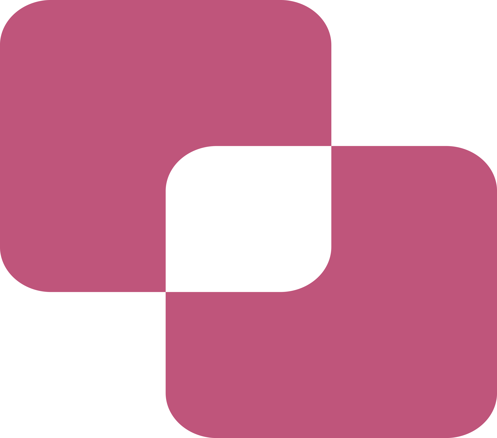

CONNECT BAZAR
Connect Bazar is a local e-commerce platform which targets customers within city / town. Below are the key highlights of Connect Bazar:
1. The main target of this platform is to provide facilities for local vendors to reach local customers
online.
2. Competitive pricing among vendors to provide local goods, which couldn't be found on other e-commerce platform at cheap rates.
3. Fastest delivery time as we promise to deliver goods within 3 hours of order placed (depends
on location).
4. Connect to your local or global customers digitally through our mobile based solutions.
5. Manage your products availability at realtime with 0 downtime.
